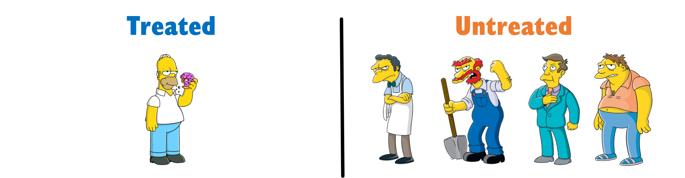
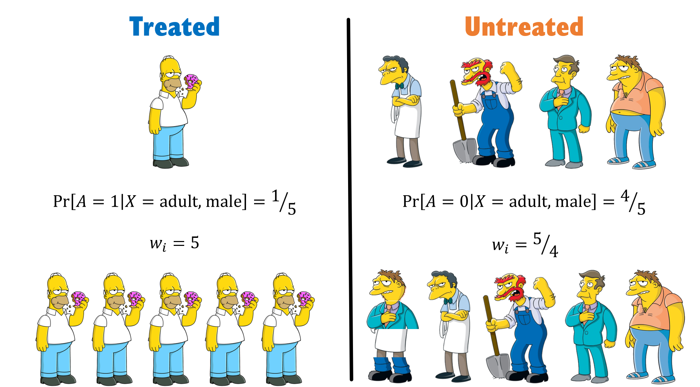

Solving Simpson’s Paradox with Inverse Probability Weighting
A visual intuition on how the most popular method in causal-inference works, and how it solves one of the most popular paradoxes in statistics.
Originally published on
Statisticians love using the word “paradox” to describe simply unintuitive results, regardless of how much it upsets their fellow logicians. To get back at them, we’ll apply causality to solve one of their most famous paradoxes — Simpson’s Paradox.
In this post, I will briefly introduce what IPW is in the context of causal inference and present a simple intuition to how it works. I will then provide a popular example of the paradox from the medical domain and we’ll see, visually, how IPW solves it.
Want to skip the details? Scroll to the end of the article.
Causal Inference with IPW
IPW, short for Inverse Probability (sometimes Propensity) Weighting, is a popular method for estimating causal effects from data. It’s a simple yet powerful tool to eliminate confounding or selection bias. To keep it casual (ha!), let’s introduce it via a simple hypothetical example of estimating the causal effect of drug \(D\) on the risk of stroke.
For that, we’ll make a quick detour through randomized control trials.
Randomized Control Trials
Usually, to estimate the causal effect of a drug, we would construct a Randomized Control Trial (RCT). This means, we would recruit people and flip a coin to assign them either to take drug \(D\) or to take placebo (control). Then we would measure the rate of stroke in each group, compare them, and conclude whether \(D\) increased or decreased the risk of illness.
We know that there are multiple contributing factors to stroke. For example, sex (vascular systems can be differentiated between males and females) and age (veins tend to clog with time). The reason we could simply compare the two groups and disregard those other factors has everything to do with the randomization we applied.
The randomization creates a similar distribution of age and sex between the two groups (on average). Consequently, when comparing the groups, the contributions of those variables cancel themselves out. The only parameter consistently different between the groups is whether they took \(D\) or placebo, and therefore, the differences we observed in the risk can be contributed only to \(D\), making them the causal effect of \(D\).
We can decompose the risk of stroke in our simple example into a slightly more concise mathematical notation:
\[ \begin{array}{c} \text{risk stroke in treated}=\text{risk due to age} + \text{risk due to sex} + \text{risk due to }D \\ - \\ \text{risk stroke in control}=\text{risk due to age} + \text{risk due to sex} + \underbrace{\text{risk due to placebo}}_{=0} \\ = \\ \text{risk due to }D \end{array} \]
We compare the risk between between our groups by taking the difference.
Since age and sex are distributed similarly between groups, they contribute the same risk in both groups and so they cancel themselves out. Since placebo is a small sugar pill, its contribution is zero. Hence, we are left only with \(\text{risk due to }D\).
Voilà! The causal effect of \(D\) on stroke.
Causal Effect from Non-Experimental Data
However, performing a randomized control trial costs money and takes a long time (among other disadvantages). Still paying our student-loan, we don’t have the resources to conduct such an experiment. What we do have is data, because data is becoming ever cheaper and HMOs collect them easily.
The problem with such observational data from HMOs is that it no longer comes from our nice experimental distribution. Unfortunately for us (but really luckily for us), physicians are not random. They assign treatments based on our characteristics (say, age and sex). Therefore, there might be an overall tendency to prescribe certain groups with one drug and not the other. In this case, if we were to simply compare those who did take D with those who did not, the distribution of those factors will not necessarily be the same and so their contribution will no longer cancel out.
Consequently, the “effect” we’ll observe will no longer be the causal effect of D, but rather a quantity entangling both causal and non-causal impacts, essentially contaminating the causal effect of D with the contribution of those other factors.
To estimate the true causal effect, we’ll first need to make the two groups comparable, and the way to make them comparable is where causal inference, and specifically IPW, comes into play.
Inverse Probability/Propensity Weighting
Now that we have set the scene, we can finally present what IPW is. As we said, IPW stands for Inverse Propensity Weighting. It’s a method to balance groups by giving each data-point a weight, so that the weighted-distribution of features in first group is similar to the weighted-distribution of the second one.
We mentioned that physicians don’t prescribe drugs randomly, but rather base it on the features of their patients. Therefore, each patient will have a different likelihood to be prescribed to D, based on their characteristics. This likelihood is referred to the propensity to be treated. To put it mathematically, if we mark our patient features as X, the propensity is the probability of patients getting or not getting the treatment: \(\Pr[D|X]\). Once we estimated this probability to treat, the weight we assign is simply its inverse: \(1 / \Pr[D|X]\).
When we have a large number of features, we will need some machine learning model to crunch all those high dimensional data into one probability scalar. But in order to see why this process even results in a balanced population, let’s take the simple example with one feature, say being an adult male.
IPW by a Simple Example

Examining the distribution in the above figure, we see that our groups are imbalanced with regard to males. Therefore, if we were to simply calculate an average risk in each group, we would not be able to say whether the difference we see is due to being treated or simply because of being a male.
Our first step is to calculate the probability of each individual to be in the group they are actually assigned to. We have 5 men in total, 1 treated and 4 that are not. Hence, we can make a simple estimate that the probability for males to get the drug is ⅕ and the probability for males to not get the drug is ⅘.
Our second step is to inverse those probabilities and assign them to each individual. Homer, therefore, getting a weight of 5, while Moe, Barney, Groundskeeper Willie, and Principal Skinner each get a weight of 5/4. We basically create a pseudo population where we have 5 Homers, and we have 5/4 of each of the untreated — meaning we have one Moe, one Barney, one Willie, and one Skinner, and another hybrid-person which is ¼ of each. Making that a total of 5 treated and 5 controls.

See, we were able to create a population in which males are evenly distributed between groups.
In real life, of course, there will be more than one feature to handle, and that’s why we’ll need a model to estimate \(\Pr[D|X]\).
TL;DR
Simpson’s Paradox
By now you might have a hunch how we can use IPW to solve Simpson’s paradox, but before we do, let’s briefly introduce what this paradox is all about.
Simpson’s Paradox, a term coined by Blyte¹, is named after Edward Simpson, the first statistician to explicitly point to this problem. In short, the paradox happens when an overall average trend in the population is reversed or canceled-out when examining its composing sub-groups.
The intuition in the continuous case is very clear, as suggested by this GIF:
To get a better understanding of the phenomena, let’s examine a real-world example:
According to the paper, we have two ways to treat kidney-stones. Either with an open-surgery (A) or with a new non-invasive method using shock-waves (B). We gather medical records from 700 people, 350 from each treatment-group and compare their success rates.
Wishing to conclude which method is better, we compare the success rates among group A and B and see they are 78% and 82.5%, respectively. Naively, we want to deduce B is better (by 4.5%), but we remember we read somewhere (where?) that physicians are not random. We suspect there’s probably some reason as to why patients got a certain treatment but not the other, and that it probably has to do with their prior medical condition.
Lo and behold, when we split the patients based on stone size — we see a different trend. Suddenly it is treatment A that is better for both small stones and large stones — 93.1 and 73% respectively.
The averaging process probably masks some vital information, so let’s look at the raw numbers.
Treatment A has 81/87 (93.1%) success rate for small stones and 192/263 (73%) for large stones. Meanwhile, treatment B has 234/270 (86.67%) success rate for small stones and 55/80 (68.75%) for large stones.
| Stone size \ Treatment | A | B |
|---|---|---|
| Both sizes | 273/350 = 78.0% |
289/350 = 82.5% |
| Small | 81/87 = 93.1% |
234/270 = 86.67% |
| Large | 192/263 = 73.0% |
55/80 = 68.75% |
Do you see what the denominator is hiding? The game is rigged. B got the majority of easy cases (small stones), while A got the majority of hard cases. Severity of the patients is not similarly distributed across treatment groups. Since larger stones also have a lower chance of success — because they are more difficult to handle, we find ourselves in a biased situation where comparison of treatments is not fair. This is common in day-to-day scenarios, because when physicians encounter tougher cases (larger stones), they will tend to use bigger guns (open surgery).
Generally speaking, a variable that affects both the treatment assignment and the outcome is called a confounding variable. In our case, the severity of patients, expressed by the size of their kidney stones, is a confounder since it increases both the likelihood to be assigned to a harsher medical procedure (a surgery more likely to be effective), and increases the risk of failing (stones not being completely removed).
In our final act of this post, we’ll fix this discrepancy in features (severity through stone sizes) between the treated and controls using IPW.
Using IPW to Solve Simpson’s Paradox
We have an imbalanced situation whereas the probability to get treatment A if you have small stones is 87/(87+270)=24.4% and if you have large stones it’s 263/(263+80)=76.67%. Similarly, for treatment B it’s 270/(270+87)=75.6% and 80/(80+263)=23.33%.
Therefore, we can easily calculate the weight of each individual by taking the inverted fraction of people from each group (since we look only at binary stone size, our individuals are basically identical within their groups, so we can use group-level weights). To compute an unbiased success risk, we simply calculate the average of the success risk weighted by these weights:
\[ \begin{array}{c} \text{For treatment } A: \left( \frac{357}{87} \cdot \frac{81}{87} + \frac{343}{263} \cdot \frac{192}{263} \right) / \left(\frac{357}{87} + \frac{343}{263} \right) = 88.26\% \\ \text{For treatment } B: \left( \frac{357}{270} \cdot \frac{234}{270} + \frac{343}{80} \cdot \frac{55}{80} \right) / \left(\frac{357}{270} + \frac{343}{80} \right) = 72.97\% \end{array} \]
And we see that now, even if we aggregate the size of stones, treatment A is better than B (by ~15%). This is consistent with A also being better in every sub-group, and so the reversal we saw before no longer exists.
We have solved Simpson's Paradox.
TL;DR
in case you haven't read a word, here's the entire post summed up as a GIF: